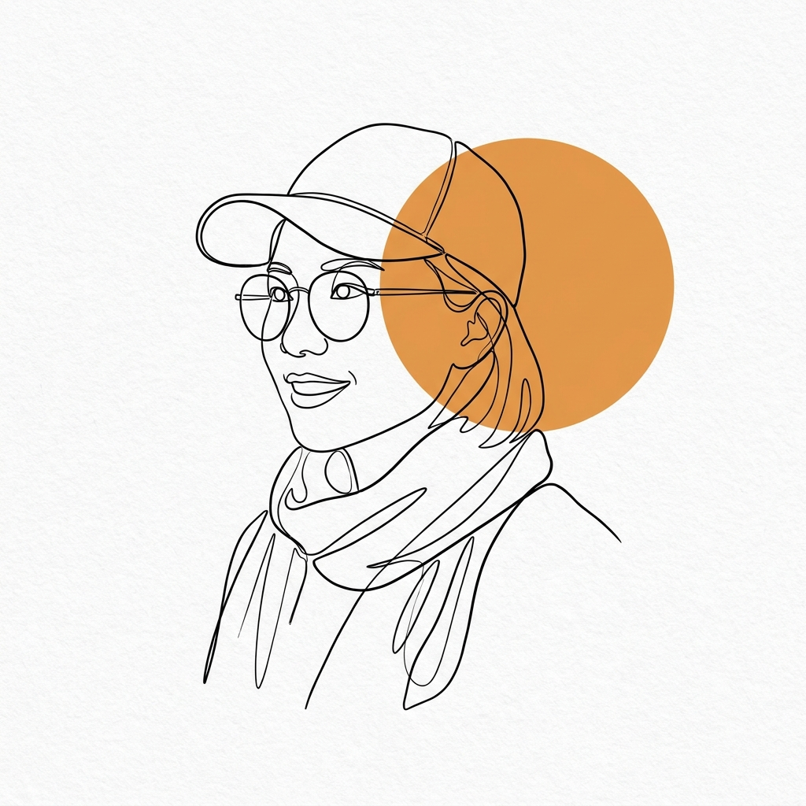

关于本站
为什么要有这个案例库
设计思维进入中小学课堂已有多年，但大多数一线教师在开始自己的第一个项目时，依然缺一样东西：别人真实做过的例子——不是方法论文章，而是带着学生成果与教师反思的完整教学记录。
这个网站就是一个正在生长的案例库。我们按学段与课时整理案例，呈现每个项目走了哪几步、学生做出了什么、教师在哪些地方踩了坑。你可以直接检索取用，也可以把自己的案例提交进来，让更多课堂少走弯路。
“设计思维是一种以人为本的创新方法——它从设计者的工具箱里汲取养分，把人的需求、技术的可能与成功的必要条件整合起来。” — Tim Brown，IDEO 董事长
案例的五个步骤
案例库中的项目大多沿着这条路径展开。它不是流水线——好的课堂常常在其中某一步来回多次。
- 共情 Empathize观察、采访、亲身体验用户的真实处境
- 定义 Define把散乱的发现收拢成一个值得解决的观点
- 构思 Ideate先求多、再求好，让数量带来惊喜
- 原型 Prototype动手做出可以拿来讨论的东西
- 测试 Test交给真实用户，把反馈带回下一次迭代
主理人
Nicki Zheng · 设计思维教师
一位还在教室里的设计思维教师

Nicki Zheng
K12 国际学校设计思维教师 · 案例库发起人
拥有 15 年一线教学经验：曾任中文教师、人文教师，教授全球视野与跨学科项目式学习课程；目前任职于 K12 国际学校，担任设计思维教师。白天在教室里和学生一起做项目，晚上和周末维护这个案例库——她相信好的案例值得被更多课堂看见。
- 认证IB 注册教育者（IB World School Educator）
- 认证IBDP 环境系统与社会（ESS）持证教师
- 进修完成 MIT Online Universal AI 课程
- 进修完成 Korda Institute 项目设计课程
- 与 High Tech High 一线教师联合开发双语项目夏令营 与美国知名 PBL 学校 High Tech High 的一线教师共同开发、落地多场双语项目式学习夏令营，将真实项目带入中国课堂。
- 中学生赛事指导与评委 担任 WSC 世界学者杯、CNCC 中国青少年商业研习、CBPA 等赛事的指导教师与评委，指导学生多次获得竞赛大奖。
- 发起 K12 设计思维案例库 把十五年课堂经验与同行们的实践整理成可检索、可迁移的案例集，服务更多一线教育者。
精选案例
查看全部案例